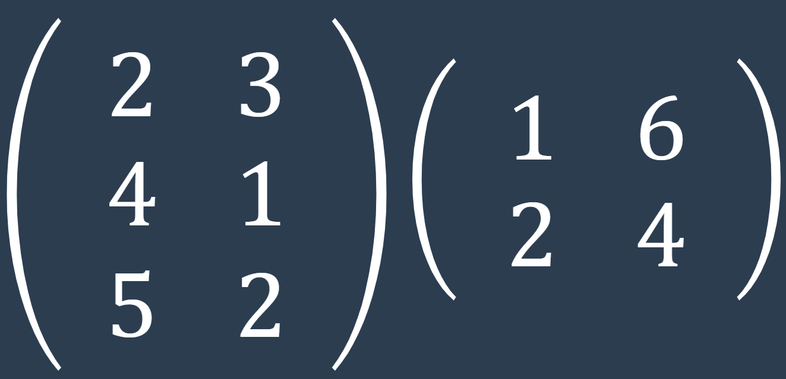
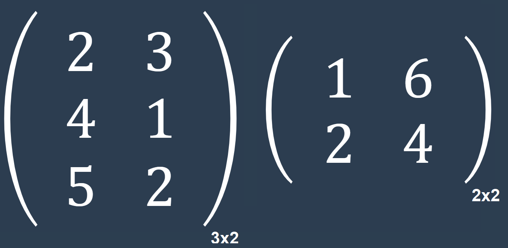
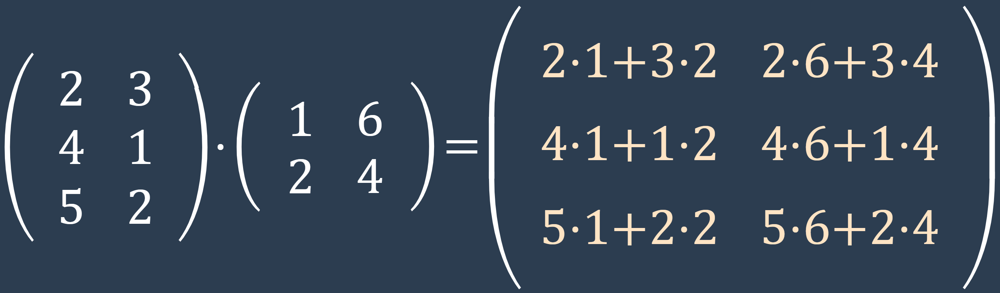
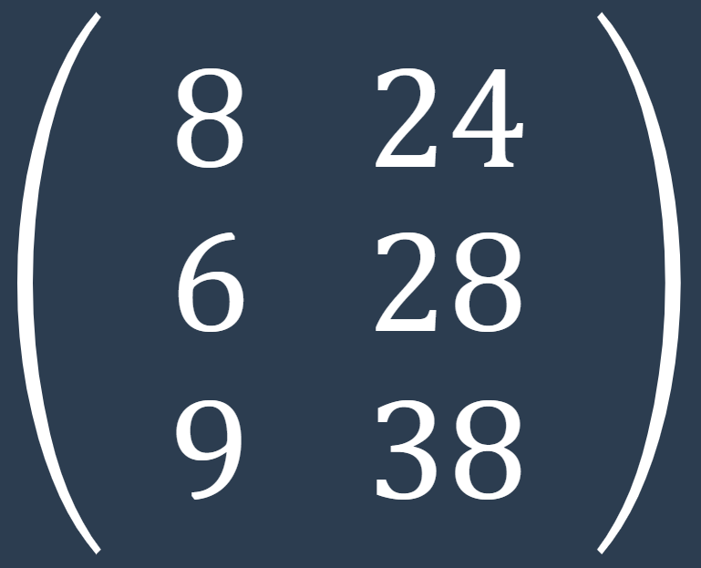

El producto de matrices es una operación que se realiza entre dos matrices y resulta en una nueva matriz. Para que dos matrices puedan ser multiplicadas, el número de columnas de la primera matriz debe ser igual al número de filas de la segunda matriz.
Supongamos que tenemos las siguientes dos matrices:
Verificar la compatibilidad de las matrices: La matriz A tiene 3 filas y 2 columnas, mientras que la matriz B tiene 2 filas y 2 columnas. El número de columnas de A es igual al número de filas de B, por lo tanto, las matrices son compatibles para la multiplicación.
Multiplicar los elementos correspondientes y sumarlos: Para calcular cada elemento de la matriz resultante, multiplicamos los elementos de la fila correspondiente de la matriz A por los elementos de la columna correspondiente de la matriz B, y luego sumamos los resultados.
Construir la matriz resultante: Creamos una nueva matriz, llamada C, con los resultados obtenidos en el paso anterior. La matriz resultante C tendrá 3 filas y 2 columnas.
Siguiendo estos pasos, hemos realizado el producto de las matrices A y B, y obtenido la matriz resultante C. Cada elemento de la matriz resultante es el resultado de multiplicar los elementos correspondientes de las matrices originales y luego sumarlos.